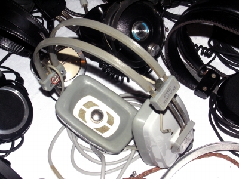
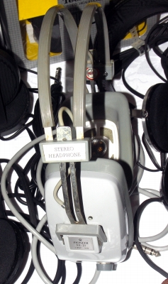
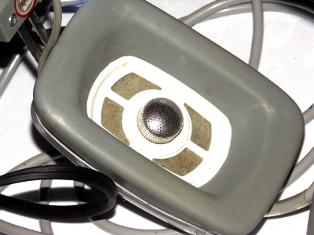

SE-21
 



■価格 4,500円■型式 ２ウェイダイナミック型■振動板 低音用66�o/高音用15�o■インピーダンス 16Ω■再生周波数帯域 30-20,000Hz■許容入力 300mW■感度 ■コード 1.9m■重量 370g■発売 〜1967年■販売終了 〜1970年頃■備考 スペックは1967年の内外ヘットフォン規格表から写真はすべて「つきじ」氏所有機トーンコントロール付き
パイオニアのインデックスへ